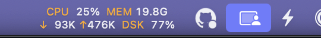

System stats, right in your menu bar.
A tiny macOS monitor for CPU, Memory, Network and Disk.
Download for macOS

Lightweight
Reads metrics straight from the kernel with one low-wakeup timer. ~0% CPU, and it pauses while the display sleeps.
Every disk
Space for every mounted disk, including external drives and disk images, plus total disk I/O.
Condensed mode
Two rows of 9-point text save horizontal space, showing only the metrics you pick.
Native
AppKit, appearance-aware colors, launch at login, and automatic updates via Sparkle.